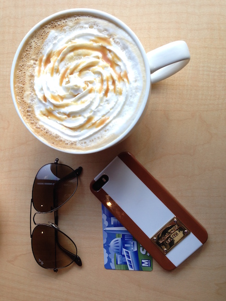

Tribeca Coffee Roaster
 1210 N Charles Street, Baltimore, MD 21201 (443) 869-4279Our specialty is hand-brewed coffee. Choose from our constantly changing coffee menu for a single-serve, hand-poured cup from a Chemex.
Our baristas also are experts at making espresso-based drinks (cappuccinos, lattes, etc.). Check out some of the photos customers have taken of the latte art we've made (owner John Fancy still can't get that down).
We also have some truly delicious sandwiches made by cook and food director Andy. But the focus is, and always will be, the coffee.
Come pay us a visit. We would love to make you a great cup of coffee.